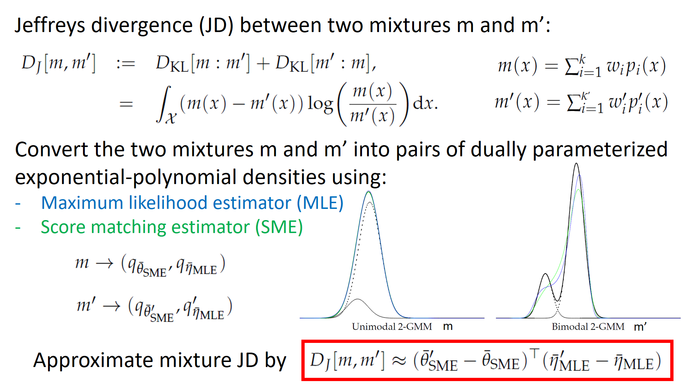

<h1>Fast Approximations of the Jeffreys Divergence between Univariate Gaussian Mixtures via Mixture Conversions 
to Exponential-Polynomial Family Densities</h1>


<center>

</center>

<HR>
Last edited, October 2021.